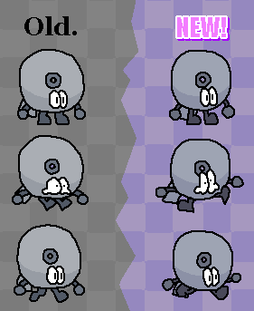

Canvas Chaos - Devlog 1
30 October 2026
Welcome to the first Canvas Chaos devlog! Here I'll discuss progress on the game, new content and how we got there!
This game has been in development since 28th July, 2023. That’s 3 years, 38 months, 169 weeks, 1,190 days, 28,560 hours, 1,713,600 minutes and 102,816,000 seconds of working on Canvas Chaos as of the publish date of this devlog.
Tapi Redesign
Tapi (the tape roll character) is getting a redesign!

It may not seem that different, but the most significant reason Tapi got a redesign is because he’s too restricting to draw. His old design had stubby and thick limbs, so when there were a couple frames where his arm needed to stretch out for example, it would look out of place.
He was also difficult to draw because of his legs. Back then, his legs were too thick so his feet would blend in. Drawing his legs in certain poses or angles was very confusing, and in the end it wouldn't even look like a leg.
For the new design, the arms and legs are now thinner, but his hands and feet stay the same size. This makes it clear what part of Tapi is what, while also making the drawing process significantly easier. The animations are also much smoother, since over time I've improved a ton at drawing and animating.
Cave Level Remake
Recently, the main priority of development was improving / remaking the levels in World 1.
Originally, the cave level wasn’t the greatest. There were very clear flaws in the level design, art and the gimmicks.
Take a look at a video of the new version!
In the new version, the main focus is these minecarts. They fit the theme of a mine level much more, and the crystal fists that change your direction and push you upwards make for some interesting gameplay!
We want to get all of the levels to reach if not overcome the quality of what was shown in the video.
Level Progress
Usually, creating a level plays out something like this:
- Planning / implementing the mechanics
- Creating the backgrounds + tilesets
- Creating the level layout
- Playtesting
- Level polishing (improving the layout, visuals, etc)
I always make the music like 2 months before I make the level simply because I always immediately make a song the moment I get a melody idea.
I’ve been planning the levels and story of the game throughout the development. And now I think I’ve made a final decision on the game's levels.
- Not started
- Incomplete
- Needs tweaking / polish
- Fully complete
World 1
- The Grasslands
- Cloudy Peaks
- Crystal Caves
- Tricky Temple
World 2
- Mad Mall
- Rooftop Rampage
- Awesome Arcade
- Shell Seas
World 3
- Swamp Sewers
- High Skies
- Icicle Top
- The Dojo
World 4
- Frantic Factory
- Star Fields
- Biohazard Labs
- Chaos Unfolds
New Music
Lastly, I’ve posted some tracks for this game on YouTube
You might’ve heard a few from the Dark Thunder Games TikTok account, I’ve gone through those songs and made some improvements to them.
Take a look!
Closing Things Off
With how development is going at the moment, I predict that all of the levels and bosses will at least be in a playable state by around mid-to-late 2027.
Tweaking and decorating levels doesn't take too long for this game, so it could possibly be complete by 2028 (after menus, cutscenes, translation, bug fixing and other stuff are done).
But game development is like a wacky roller coaster ride, so the game could still be in development by the time human civilization has fallen.